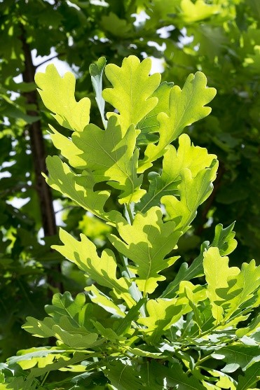

|

Крупное, обычно сильно ветвящееся дерево с огромной кроной и мощным стволом. Достигает высоты 20—40 м. Может дожить до 2000 лет,
но обычно живёт 300—400 лет. Рост в высоту прекращается в возрасте 100—200 лет; прирост в толщину, хоть и незначительный,
продолжается всю жизнь. Вероятно, старейшим представителем следует считать Стелмужский дуб с окружностью ствола 13 м в Литве.
Его возраст, по разным оценкам, — от 700 до 2000 лет. Корневая система состоит из очень длинного стержневого корня;
с шести—восьми лет начинают развиваться боковые корни, тоже уходящие глубоко в землю. Плод — орех (жёлудь) голый,
буровато-коричневый (1,5—3,5 см длиной и 1,2—2 см в диаметре), на длинной (3—8 см) плодоножке. Жёлудь размещён в блюдце,
или чашевидной мисочке — плюске (0,5—1 см длиной). Плоды созревают в сентябре — октябре.
Фотограф: Зоя Эль |